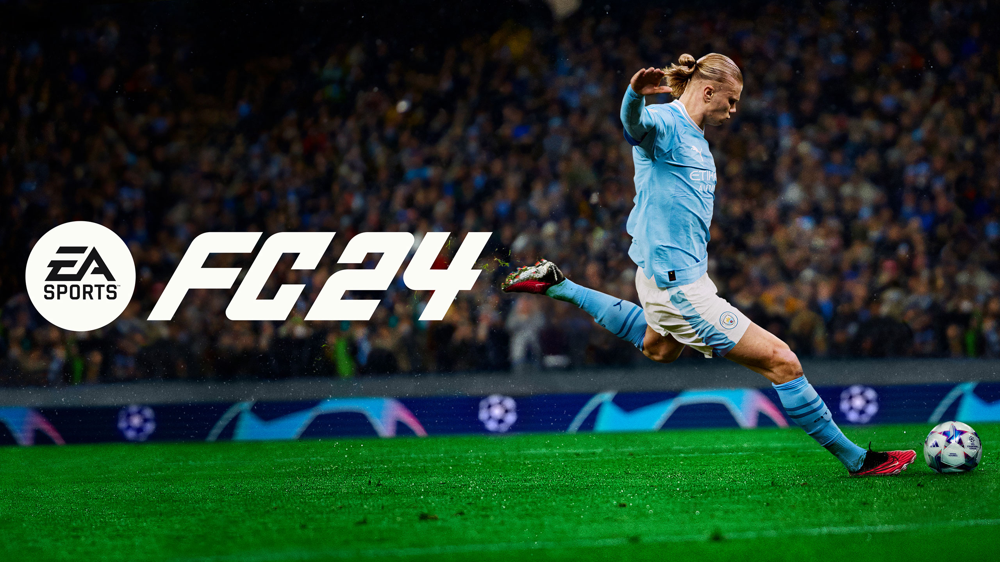
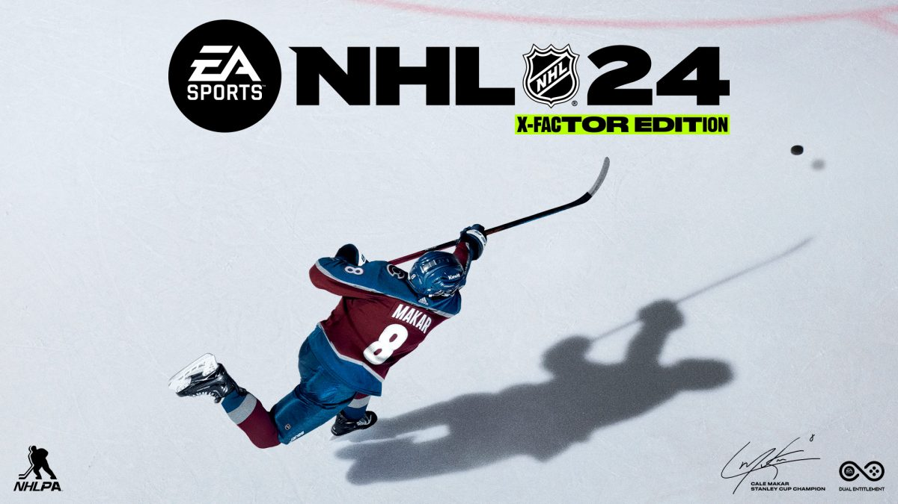
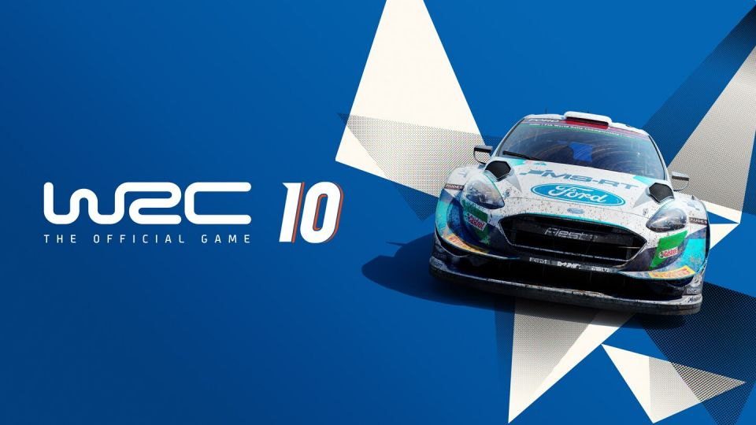
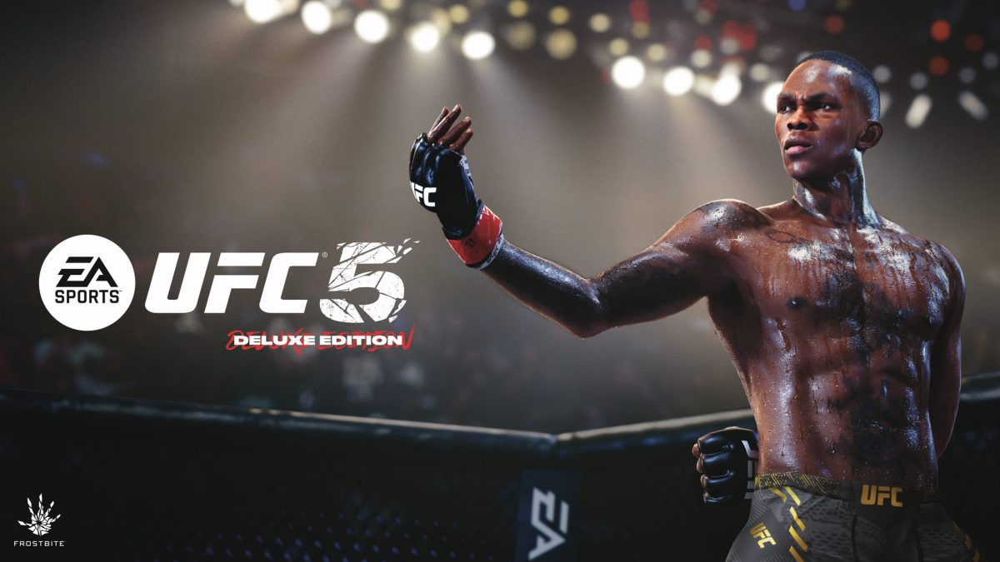
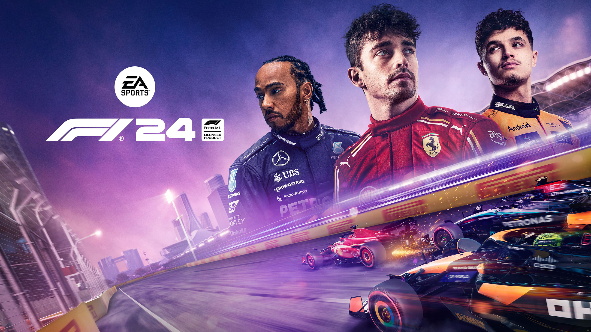

Hry






Vítáme vás na oficiálních stránkách Electronic Arts (EA), jednoho z předních světových herních studií. Jsme společnost s bohatou historií a vášní pro vytváření nezapomenutelných herních zážitků, které spojují miliony hráčů po celém světě. Vytváříme hry pro všechny typy hráčů - od sportovních nadšenců až po milovníky dobrodružství a fantasy světů. Každá hra, kterou vydáváme, je výsledkem tvrdé práce, kreativity a odhodlání našeho talentovaného týmu. Podívejte se na naše nejnovější tituly a připravované projekty v sekci Hry.
Electronic Arts (EA) byla založena v roce 1982 s vizí přinášet inovativní a kvalitní zábavu, která zaujme hráče všech věkových kategorií. S více než třemi desetiletími zkušeností v herním průmyslu jsme se stali jedním z nejvýznamnějších vývojářů a vydavatelů her na světě. Naším posláním je inspirovat svět prostřednictvím her, které propojují lidi, vytvářejí vzpomínky a poskytují hluboké, smysluplné zážitky. V EA věříme, že hry mají moc spojovat lidi. Proto aktivně podporujeme naši herní komunitu a vytváříme platformy, kde se mohou hráči setkávat, sdílet své zkušenosti a společně se bavit. Pořádáme různé herní akce, soutěže a komunitní projekty, které podporují interakci a spolupráci mezi hráči z celého světa. Naše portfolio zahrnuje některé z nejznámějších a nejoblíbenějších herních sérií, jako jsou FIFA, The Sims, Battlefield, Dragon Age a mnoho dalších. Naším cílem je neustále posouvat hranice herního průmyslu a poskytovat hráčům hry, které si zamilují.
"EA má potenciál, ale někdy se mi zdá, že kladou větší důraz na mikrotransakce než na skutečný herní zážitek. Některé hry, jako je Battlefield, jsou skvělé, ale loot boxy a pay-to-win prvky mi kazí celkový dojem." - Jan Novák
"Mám ráda The Sims sérii a EA dělá skvělou práci s novými dodatky a aktualizacemi. Vždy se těším na nové funkce a rozšíření. Podpora komunity je také vynikající." - Petra Svobodová
"EA má několik úžasných sérií, které mě nikdy neomrzí. FIFA a Madden NFL jsou moje nejoblíbenější. Grafika je vždy špičková a herní mechaniky jsou neustále vylepšovány. Oceňuji také to, že často pořádají slevy na své hry." - Karel Dvořák
"Dragon Age a Mass Effect jsou úžasné série, ale mám pocit, že poslední díly ztratily něco ze svého kouzla. Grafika a příběhy jsou stále na vysoké úrovni, ale rozhodnutí vedení ohledně herních mechanik nejsou vždy v souladu s přáním hráčů." - Anna Novotná
"Býval jsem velkým fanouškem EA, ale poslední dobou mě zklamali. Uvedení nedodělaných her na trh a zaměření na mikrotransakce mě odrazuje. Potřebují se více zaměřit na kvalitu než na rychlý zisk." - Tomáš Navrátil
"EA má tendenci zničit potenciálně skvělé hry kvůli špatným obchodním rozhodnutím. Anthem a Star Wars Battlefront II jsou toho dobrým příkladem. Potřebují se více starat o hráčskou komunitu a méně o mikrotransakce." - Lucie Dvořáková